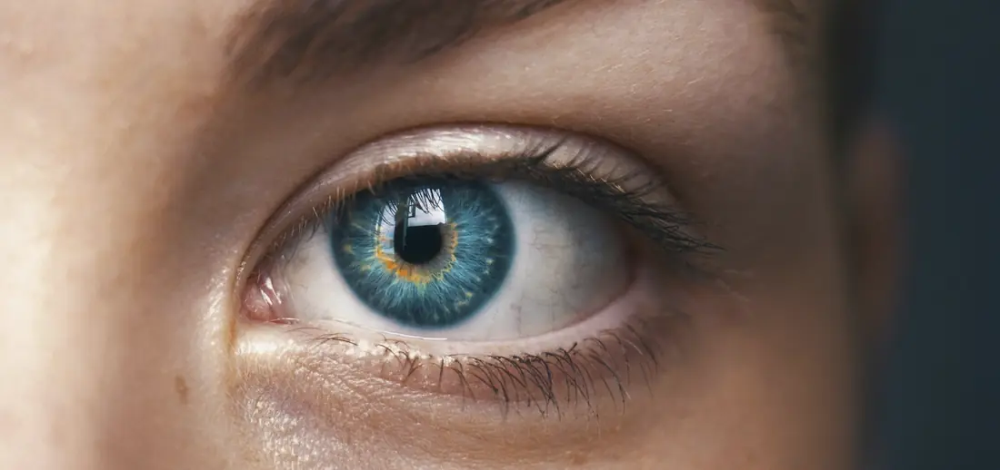

Cirugía de cataratas
Si ve borroso, con colores apagados o le deslumbran las luces, puede tener cataratas. La operación sustituye el cristalino opaco por una lente intraocular. Es ambulatoria.
- Estudio preoperatorio completo
- Lente adaptada a su vista
- Revisiones después de la cirugía